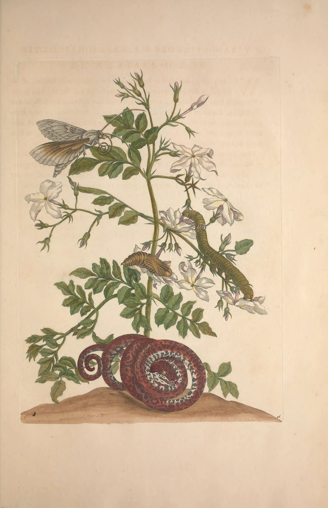

Metamorphosis insectorum Surinamensium, Plate 46
Maria Sibylla Merian · 1705 · Hand-coloured engraving · Smithsonian Libraries and Archives
Free to use
Jasmine grew wild in Suriname like hedges in Europe, Merian wrote, with a scent that carried a long way, and lizards, iguanas and snakes sheltered under it. She caught this snake under the hedge at the foot of the plants and noted its way of rolling itself up and hiding its head in its own coils. The green caterpillar became a pupa on 12 February.